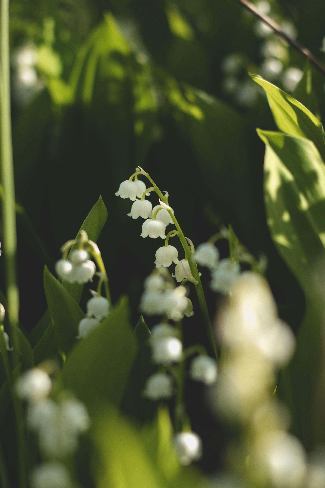

Journal
This page is a place to collect my personal family memories of my brother. Each journal entry is written from my own memories, little by little.
このページでは、家族として見てきた兄の姿や、私の記憶の中に残っている出来事を、 少しずつJournalとして残していきます。
My Brother as I Remember Him
First Journal
To me, my brother was not only a musician. He was my older brother, eleven years older than me, and he was a kind, comforting presence throughout my childhood.
兄は、私にとってはただ有名なミュージシャンではなく、 11歳年上の、とてもやさしく大きな存在でした。
兄のサラリーマン時代
July 2026
バブル時代のカフェやレストラン、兄が関わっていた時代の空気や思い出について。